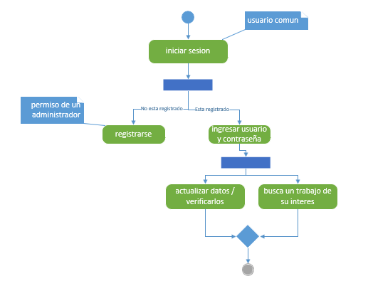
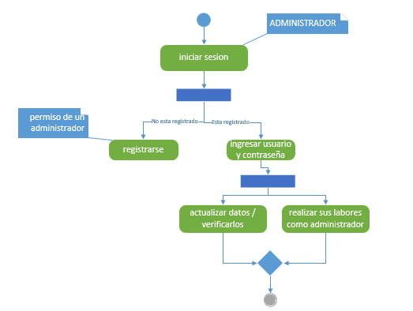
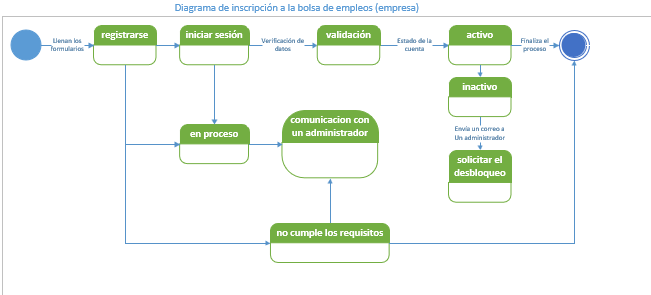

TIPOS DE DIAGRAMAS UML
Los Diagramas UML (Lenguaje Unificado de Modelado) son un lenguaje gráfico para visualizar, especificar y documentar los elementos de un sistema de software. Proporcionan una forma estandarizada de representar los componentes de un sistema, sus relaciones y su comportamiento, facilitando la comprensión y el análisis del diseño del sistema. nos centraremos en los diagramas estructurales, un grupo fundamental de diagramas UML que describen la organización estática de un sistema. Estos diagramas son esenciales para comprender la arquitectura del sistema y sus componentes básicos.
DIAGRAMAS ESTRUCTURALES
Los diagramas estructurales representan la estructura estática de un software o sistema, y también muestran diferentes niveles de abstracción e implementación. Estos se usan para ayudarlo a visualizar las diversas estructuras que componen un sistema, como una base de datos o aplicación. Muestran la jerarquía de componentes o módulos y cómo se conectan e interactúan entre sí. Estas herramientas ofrecen orientación y garantizan que todas las partes de un sistema funcionen según lo previsto en relación con todas las demás partes.
Diagrama de clase
Este diagrama, el más común en el desarrollo de software, se usa para representar el diseño lógico y físico de un sistema, y muestra sus clases. Tiene un aspecto similar al del diagrama de flujo porque las clases se representan con cuadros. Este diagrama ofrece una imagen de las diferentes clases y la forma en la que se interrelacionan, y cada clase posee tres compartimientos:
- Sección superior: nombre de clase
- Sección central: atributos de clase
- Sección inferior: métodos u operaciones de clase
Diagrama de Caso de Uso
Un diagrama de caso de uso UML (Lenguaje Unificado de Modelado) es una herramienta visual que se utiliza para modelar el comportamiento de un sistema. Muestra cómo los usuarios (o actores) interactúan con el sistema para lograr un objetivo específico.
Componentes principales de un diagrama de caso de uso UML
Actores
Representan a los usuarios o entidades externas que interactúan con el sistema. Se representan como figuras de palo con un nombre dentro.
Casos de Uso
Representan las funcionalidades o servicios que ofrece el sistema. Se representan como elipses con un nombre dentro.
Relaciones
Muestran las interacciones entre actores y casos de uso. Se representan con líneas. Existen tres tipos principales de relaciones
- °Asociación
- Un actor inicia un caso de uso.
- °Comunicación
- El sistema envía información al actor o viceversa.
- °Extensión
- Un caso de uso agrega funcionalidad a otro caso de uso.
- °Inclusión
- Un caso de uso contiene funcionalidad de otro caso de uso.
Diagrama de Actividades
es una herramienta visual que se utiliza para modelar el flujo de acciones en un sistema. Es similar a un diagrama de flujo, pero con más funciones y flexibilidad. Los diagramas de actividades UML se utilizan para mostrar el comportamiento de un sistema, incluyendo los pasos involucrados en un proceso, las decisiones que se toman y las condiciones que deben cumplirse para que el proceso se complete.
Elementos de un diagrama de Actividades UML
° Acciones
Representan los pasos básicos que se llevan a cabo en el sistema. Se representan con rectángulos con esquinas redondeadas.
° Flujos de control
Muestran la secuencia en la que se ejecutan las acciones. Se representan con flechas.
° Decisiones
Representan puntos en el flujo de control donde se debe tomar una decisión. Se representan con diamantes.
° Bifurcaciones
Permiten que el flujo de control se divida en dos o más ramas. Se representan con barras dobles.
° Uniones
Permiten que dos o más ramas del flujo de control se vuelvan a unir. Se representan con círculos dobles.
° Estados finales
Representan el final del proceso. Se representan con círculos negros.
 Diagrama de Secuencia
Un diagrama de secuencia UML (Unified Modeling Language) es un tipo de diagrama de interacción que muestra la interacción entre objetos en un sistema a lo largo del tiempo. Se utiliza para modelar cómo los objetos se comunican entre sí para completar una tarea o función específica.
Elementos de un diagrama de Secuencia UML
° Líneas de vida
Representan a los objetos que participan en la interacción. Se dibujan como líneas verticales que se extienden a lo largo del tiempo.
° Mensajes
Representan la comunicación entre objetos. Se dibujan como flechas horizontales que van desde la línea de vida del objeto emisor a la línea de vida del objeto receptor.
° Activaciones
Representan el período de tiempo en que un objeto está activo y participando en la interacción. Se muestran como rectángulos que se superponen a la línea de vida del objeto.
° Fragmentos de interacción
Permiten dividir un diagrama de secuencia en secciones más pequeñas y manejables. Se representan con marcos rectangulares que contienen una o más interacciones.
° Condiciones
Representan condiciones que pueden afectar el flujo de la interacción. Se muestran como símbolos de diamante con texto que describe la condición.
° Bucles
Representan la repetición de una parte de la interacción. Se muestran como símbolos de bucle con texto que describe la condición de la repetición.

Diagrama de Estados
Un diagrama de estado UML, también conocido como diagrama de máquina de estados o diagrama de transición de estados, es una herramienta gráfica que se utiliza para modelar el comportamiento dinámico de un sistema. Se emplea en el Lenguaje Unificado de Modelado (UML) para visualizar los diferentes estados por los que pasa un objeto o sistema a lo largo de su ciclo de vida, en respuesta a eventos específicos.
Elementos principales de un diagrama de estado UML
° Estados
Representados por rectángulos con esquinas redondeadas y etiquetados con el nombre del estado. Cada estado indica una condición específica en la que se encuentra el objeto o sistema.
° Eventos
Son los desencadenantes que provocan la transición de un estado a otro. Se representan por flechas que salen de un estado y apuntan hacia otro.
° Transiciones
Conectan dos estados y representan el cambio de uno a otro en respuesta a un evento. Se simbolizan por las flechas mencionadas anteriormente, y junto a ellas se puede incluir una acción o guardia que condiciona la transición.
° Estados iniciales y finales
El estado inicial es aquel en el que se encuentra el objeto o sistema al comenzar su ciclo de vida. Se representa con un símbolo especial similar a un círculo inicial. El estado final, por su parte, representa el estado de terminación del ciclo de vida y se simboliza con un círculo rodeado por una línea discontinua.
Diagrama de Componentes
Un diagrama de componentes UML (Unified Modeling Language) es una herramienta visual que se utiliza para representar la estructura estática de un sistema de software. Muestra los componentes modulares de un sistema y las relaciones de dependencia entre ellos
Los diagramas de componentes para que son útiles
Proporcionan una vista general de alto nivel de los componentes de un
sistema y cómo se interconectan. Esto puede ser útil para comprender la arquitectura general
de un sistema y cómo encajan las diferentes partes.
Indican qué componentes dependen de
otros componentes para funcionar. Esto puede ser útil para identificar posibles cuellos de
botella o puntos de falla en un sistema.
Se pueden utilizar para documentar el diseño
de un sistema de una manera que sea fácil de entender para los desarrolladores, gerentes y
otras partes interesadas.
Pueden ser una herramienta útil para comunicar la arquitectura
de un sistema a otras personas. Esto puede ser útil para la capacitación, la colaboración y la
resolución de problemas.
Diagrama de Despliegue
Un diagrama de despliegue de UML (Lenguaje Unificado de Modelado) es una herramienta visual que se utiliza para modelar la arquitectura física de un sistema de software. Muestra cómo se distribuyen los componentes de software en nodos de hardware, como servidores, clientes, dispositivos móviles y bases de datos. Los nodos pueden ser dispositivos físicos o entornos de ejecución de software, como máquinas virtuales o contenedores.
Los diagramas de Despliegue son útiles para
Proporcionar una visión general de cómo se implementa un sistema, lo que
puede ser útil para comprender su complejidad y funcionamiento.
Pueden ser utilizados
por desarrolladores, arquitectos de sistemas, gerentes de proyectos y clientes para comprender
cómo se implementa un sistema.
Pueden ayudar a identificar posibles cuellos de botella,
problemas de rendimiento y otros problemas que podrían surgir durante la implementación de
un sistema.